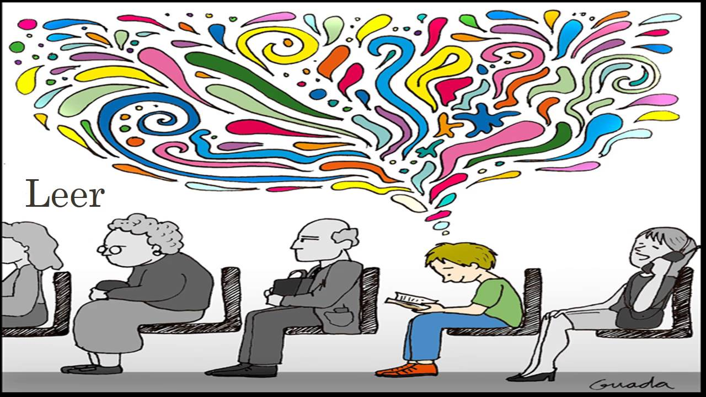

Las micro habilidades consisten en utilizar el contexto para dar significado a la palabra. Es por
esto que las habilidades lingüísticas necesitan de estas habilidades micro para poder llevarse a
buen término. A menudo fallan por una carencia de hábitos específicos, de comportamientos
coherentes, por una falta de voluntad o de un ejercicio previo.
- Morfología: Es la parte en la que se tienen que reconocer palabras, frases y sus
significados con fluidez. Utiliza el contexto para dar significado a palabras.
- Léxico: Sirve para reconocer y distinguir las diferentes letras del alfabeto y saber cómo
se han de pronunciar las palabras.
- Sintaxis: Es la parte de la gramática que enseña a coordinar y unir las palabras para
formar oraciones y expresar contextos.

Regresar